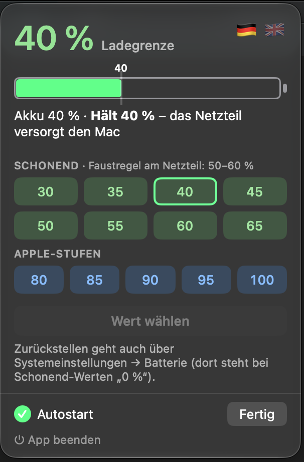
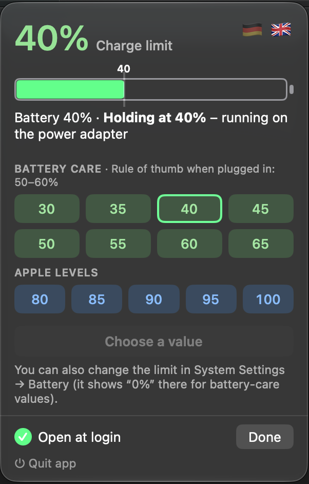

ChargeLimit
Setzt die Ladegrenze deines MacBook-Akkus auch unter Apples 80 % – bis hinunter auf 30 %. Sets your MacBook’s battery charge limit below Apple’s 80 % – all the way down to 30 %.
Für dein MacBook ladenDownload for your MacBookKostenlos und quelloffen. Für MacBooks mit Apple-Chip ab macOS 27. Free and open source. For MacBooks with Apple silicon, macOS 27 or later.


Apple hört bei 80 % auf.
ChargeLimit schon früher.Apple stops at 80 %.
ChargeLimit stops sooner.
In den Systemeinstellungen geht die Ladegrenze nur bis 80 %. ChargeLimit stellt dieselbe Grenze von Apple auf jeden Wert zwischen 30 und 65 %. System Settings only lets the charge limit go down to 80 %. ChargeLimit sets the very same Apple limit to any value from 30 to 65 %.
Am Dock altert der Akku schneller.On a dock, your battery ages faster.
Wer sein MacBook ständig an einer Dockingstation oder einem Thunderbolt-Hub mit Stromversorgung betreibt, hält den Akku fast immer voll – und genau das lässt ihn schneller altern. ChargeLimit hält ihn auf dem Wert, den du wählst, damit er deutlich langsamer altert. Für eine Reise stellst du mit einem Klick wieder auf 100 %. If your MacBook lives on a powered dock or Thunderbolt hub, its battery sits almost full all day – and that is exactly what wears it out faster. ChargeLimit keeps it at the level you choose, so it ages much more slowly. Going on a trip? One click sets it back to 100 %.
Setzt nur den Wert.It only sets the value.
ChargeLimit nutzt Apples eigene Ladegrenze, den Rest erledigt macOS. Nichts läuft dauerhaft im Hintergrund.ChargeLimit uses Apple’s own charge limit and macOS does the rest. Nothing keeps running in the background.
Bleibt, auch nach dem Neustart.Stays put, even after a restart.
Die Grenze gilt weiter, wenn du die App beendest oder den Mac neu startest.The limit stays in place when you quit the app or restart your Mac.
Verträgt sich mit optimiertem Laden.Works with Optimized Battery Charging.
In zwei Nächten mit eingeschaltetem „Optimiertes Laden“ getestet – die Grenze hat gehalten.Tested over two nights with Optimized Battery Charging turned on – the limit held.
Sperrt das Laden nie.Never blocks charging.
Der kleinste Wert ist 30 %. Darunter lädt dein MacBook immer.The lowest value is 30 %. Below that, your MacBook always charges.
In drei Schritten installiert.Installed in three steps.
- ChargeLimit.dmg laden und öffnen.Download and open ChargeLimit.dmg.
Mit dem Knopf unten oder oben auf dieser Seite.Use the button below or at the top of this page.
- ChargeLimit in den Ordner Programme ziehen.Drag ChargeLimit into the Applications folder.
Danach erscheint das Akku-Symbol in der Menüleiste.The battery icon then appears in the menu bar.
- Beim ersten Start „Trotzdem öffnen“.On first launch, choose “Open Anyway”.
Die App kommt nicht aus dem App Store, deshalb fragt macOS einmal nach: Systemeinstellungen › Datenschutz & Sicherheit › Trotzdem öffnen.The app isn’t from the App Store, so macOS asks once: System Settings › Privacy & Security › Open Anyway.
Für dein MacBook ladenDownload for your MacBook
Zum Umstellen fragt macOS nach dem Kennwort eines Administrators (bei 100 % nicht). Die vollständige Anleitung und den Quellcode findest du auf GitHub. To change the limit, macOS asks for an administrator password (not for 100 %). The full guide and the source code are on GitHub.